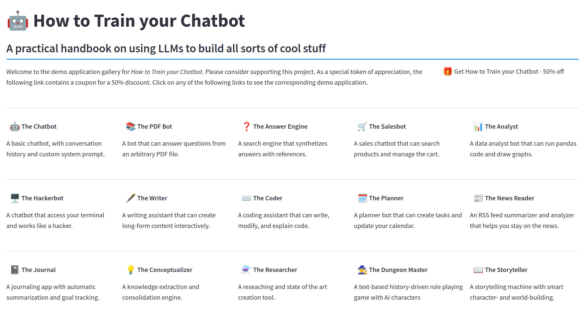

How to Train your Chatbot
A practical handbook on using LLMs to build all sorts of cool stuff
Preface
In November 2022, the world was introduced to ChatGPT, a large language model that quickly became the fastest-growing digital product in internet history. This groundbreaking technology marked a significant milestone in the 60-year-old field of artificial intelligence, providing users with an experience of interacting with a truly intelligent computer. ChatGPT, developed by OpenAI, is a prime example of a large language model, which is a type of artificial intelligence model designed to understand and generate human-like text based on the input it receives.
Language models have been in development for many years, with significant advancements made in recent times. These models are trained on vast amounts of data, enabling them to generate coherent and contextually relevant responses to a wide range of prompts. The development of these models is a testament to the progress made in the field of artificial intelligence, and their potential applications are vast and varied.
LLMs might seem like science fiction to many, and outside the realm of their possibilities for developers of more traditional type of software. However, this is not the case. The most powerful language models available today can be used via APIs to build all sorts of novel applications, from customer service chatbots, to intelligent journals, to smart assistants integrated to any type of traditional workflow, to writing and coding helpers, to videogames with a level of inmersion never seen before.
Using LLMs in practice is something at the reach of any software engineer, and it doesn’t require any special skills or knowledge about machine learning or artificial intelligence. But it does require some knowledge about how these models work, what are their inherent limitations, and how to circunvent some of the most common pitfalls in integrating LLMs in traditional applications.
This book will dive into the world of language models, focusing on large language models and their transformative potential. We will explore the inner workings of these models, their capabilities, and the limitations that come with them. By understanding how these models function, we can better appreciate their potential and learn how to use them effectively in various applications.
The book is designed for anyone who wants to learn how to use large language models (LLMs) to build practical applications. The book is suitable for anyone with basic programming skills, and we will not use any third-party frameworks or libraries beyond the OpenAI API. This means that what you will learn is universal to all chatbot APIs, and you can quickly adapt it to any existing framework.
The main goal of this book is to teach you how to use LLMs in practice without diving too deep into the technical details of how they work. We will cover the most essential techniques related to chatbots and LLMs, including standard prompt engineering techniques, several augmentation methods, and fine-tuning.
Throughout the book, we will build a dozen or so applications from scratch, using LLMs and various techniques to ask questions of your documents, extract knowledge from natural text, and create stories automatically. Whatever your business domain or area of interest, from building user-facing chatbots to interact with your SaaS product to creating useful tools for office work or research, I promise you’ll find something useful in this book.
Structure of the book
The book is divided into three parts:
Part 1: Principles
This section provides a comprehensive understanding of language models, their principles, inherent limitations, and the current state of the art. We will cover the following topics:
- Understanding Language Models: We will introduce the concept of language models, their history, and their evolution over time. We will discuss how these models are trained and the basic principles that guide their operation.
- Capabilities of Language Models: Here, we will explore the range of tasks that language models can perform, from simple text generation to more complex tasks such as translation, summarization, and question-answering.
- Limitations of Language Models: While language models have made significant strides, they are not without their limitations. We will discuss the challenges that remain in developing truly intelligent language models, including issues related to bias, explainability, and generalization.
Part 2: Techniques
In this section, we will discuss three families of techniques that can be employed to harness the power of language models in applications:
- Prompting Techniques: These techniques involve carefully designing inputs (called prompts) to steer how language models generate responses. Often the difference between an almost perfect and a mediocre response is in the quality of the prompt. The different prompt techniques we will learn hereallow transforming an otherwise generic LLM into a useful and very specific answer engine.
- Augmentation Techniques: Language models can be enhanced by connecting them with other tools and resources, such as knowledge bases, APIs, and coding sandboxes. These techniques enable language models to access external information, improving their ability to generate accurate and contextually relevant responses, and integrating them into existing applications.
- Fine-Tuning Techniques: Fine-tuning involves extending the capabilities of language models by directly modifying their weights and/or architecture. This can be done efficiently without requiring the training of models from scratch, enabling the rapid development of more advanced language models or specializing smaller models in domains where even larger models don’t work as well.
Part 3: Applications
The final and largest part of the book is dedicated to building applications that leverage large language models. We will create 15 applications, ranging from simple chat-based tools to more complex systems, demonstrating the potential of these models in real-world scenarios. Some of the applications we will build include:
- Chatbots: Typical chatbots that can engage in meaningful conversations with users, providing information, and answering questions in traditional scenarios such as customer service.
- Text Analysys Tools: Tools that can summarize long texts, extract insights, and answer specific questions while providing references.
- Coding Helpers: Coding assistance tools, that can generate, modify, explain, and debug code, as well as translating code between different programming languages.
- Data Analysis Tools: Tools that can analyze structured data, such as tables, and provide accuracte analytics, including predictions and visualizations.
- Writing Assistants: Tools that can enhance your writing providing ideas, outlines, and full drafts, as well as editing and criticizing existing text.
- Research Assistants: Tools that can search the web for some specific information and build semi-structured reports on a given user question.
- Story Generators: Tools that can generate fictional stories complete with characters, dialogs, settings, and plots, in different styles and genres.
And many more!
By the end of this book, readers will have a solid grasp of language models, their capabilities, and the techniques required to build applications that leverage their power. They will also have the knowledge and skills to make informed decisions when choosing frameworks and implementing solutions. And you will also have 15 prototype projects that you can extend and turn into your own products or showcase in your next coding interview.
Applications and source code
All the applications built in this book are based on streamlit. You can check an online version of the demo gallery at https://llm-ebook.streamlit.app. It looks like this:

All the source code is available for supporters of the book, under a very permissive license that allows you to reuse it without limitation in your private projects. You can get the book in early access mode at https://store.apiad.net/l/chatbots. It’s the best way to help support this project.
Notes for the Early Access version
This is the Early Access version of How to Train your Chatbot. It is a work in progress, and as such, it may and surely contains typos and conceptual mistakes. The content, layout, and associated code might change drastically before the first edition is considered ready.
Please send any mistakes, typos, or questions you have to apiad@apiad.net. I’m really thankful for all suggestions and error reports.